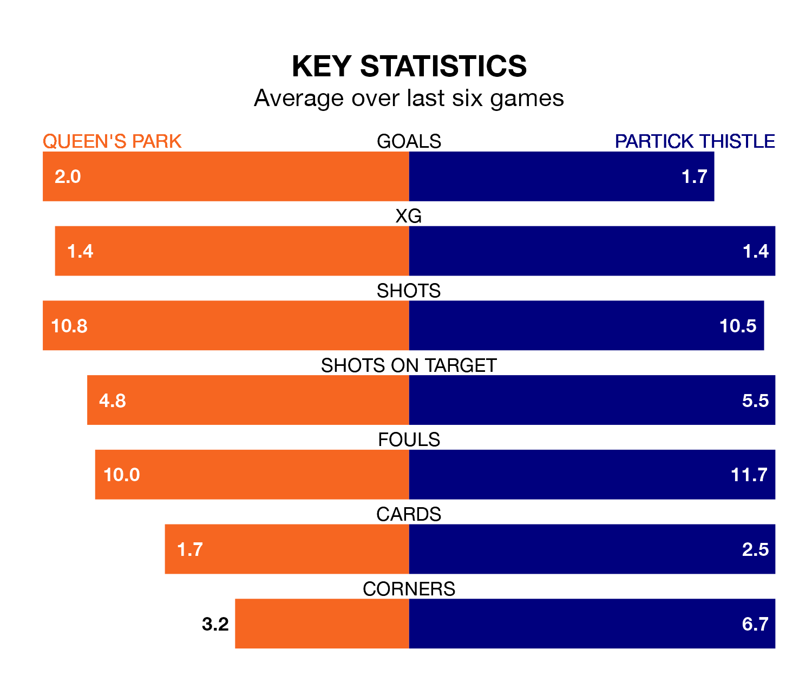

Relegation candidates Queen's Park face a challenge against high-flying Partick Thistle at Hampden Park on Saturday.
Queen's Park are eighth in the Championship table, and have picked up eight wins and seven draws in their 27 games to date.
Thistle, meanwhile, are third in the standings with 39 points, having won 10 and drawn nine of their first 26 matches, and are 16 points behind table-toppers Dundee United.
With 51 goals in 26 games so far this season, Partick Thistle are the league's joint-highest scorers with 2.0 goals per game. But they are conceding more than average too, letting in 45 goals at a rate of 1.7 per game.
Queen's Park, meanwhile, are average scorers, with 1.4 goals per game. They have conceded 1.7 goals per game.
In Brian Graham, Thistle have the league's sharpest shooter so far this season. He has notched 15 goals in 24 appearances.
His goal rate of one every 131 minutes is quicker than that of Ruari Paton, the Spiders's top scorer with a goal every 172 minutes, and a total of 14 goals in 27 games.
In the last 10 years, Queen's Park and Partick Thistle have played each other on 13 occasions. Queen's Park won three of them, Partick Thistle nine, and they drew once.
On average, the Spiders scored 1.4 goals and Thistle 2.4 in those matches.
Their last meeting was on January 2, when Partick Thistle won 3-2 at home.
The hosts are in reasonable form in the Championship, with three wins and two draws from their last six games.
With no wins and four draws over that period, the away team's form is much worse – they have taken four points from 18, compared to Queen's Park's 11.
Queen's Park's last match was on March 2, a 1-1 draw against Airdrieonians, with Dominic Thomas getting the goal for the Spiders.
Partick Thistle drew 1-1 with Dundee United last time out, also on March 2, with Graham on the scoresheet.
Saturday's match will be refereed by Iain Snedden, who has taken charge of seven Championship games so far this season, issuing one red card and booking 30 players. He has awarded two penalties.
The last Queen's Park game Snedden refereed was a 3-0 away win against Dunfermline Athletic on February 10. He is yet to oversee a match featuring Partick Thistle this season.
Updated: 09:34 (UTC), 08/03/24